<!DOCTYPE html><html><head><meta name="generator" content="Hexo 3.8.0"><meta charset="utf-8"><title>重新認識 CSS - CSS Selector (1) | Titangene Blog</title><meta name="description" content="利用 blog 紀錄學習歷程"><meta http-equiv="X-UA-Compatible" content="IE=edge"><meta name="viewport" content="width=device-width,initial-scale=1,maximum-scale=1"><meta name="HandheldFriendly" content="True"><meta name="apple-mobile-web-app-capable" content="yes"><meta name="author" content="Titangene"><link rel="shortcut icon" href="/favicon.ico"><link rel="alternate" href="/atom.xml" title="Titangene Blog"><meta name="description" content="Selector (選擇器) 可用來選擇 HTML 和 XML 文件中的節點，並將樣式屬性綁定到文件 (HTML 和 XML) 中的元素上。當選擇器與某元素 match 的時候，就可以對選到的元素進行 CSS 樣式設定。"><meta name="keywords" content="IT 鐵人賽"><meta property="og:type" content="article"><meta property="og:title" content="重新認識 CSS - CSS Selector (1)"><meta property="og:url" content="https://titangene.github.io/article/css-selector-1.html"><meta property="og:site_name" content="Titangene Blog"><meta property="og:description" content="Selector (選擇器) 可用來選擇 HTML 和 XML 文件中的節點，並將樣式屬性綁定到文件 (HTML 和 XML) 中的元素上。當選擇器與某元素 match 的時候，就可以對選到的元素進行 CSS 樣式設定。"><meta property="og:locale" content="zh-tw"><meta property="og:image" content="https://titangene.github.io/images/cover/css.png"><meta property="og:updated_time" content="2019-09-18T07:17:17.853Z"><meta name="twitter:card" content="summary_large_image"><meta name="twitter:title" content="重新認識 CSS - CSS Selector (1)"><meta name="twitter:description" content="Selector (選擇器) 可用來選擇 HTML 和 XML 文件中的節點，並將樣式屬性綁定到文件 (HTML 和 XML) 中的元素上。當選擇器與某元素 match 的時候，就可以對選到的元素進行 CSS 樣式設定。"><meta name="twitter:image" content="https://titangene.github.io/images/cover/css.png"><meta name="twitter:creator" content="@titangeneTW"><meta name="twitter:site" content="@titangene_blog"><meta property="fb:admins" content="100001106016019"><meta property="fb:app_id" content="2470546159839111"><meta property="og:image:width" content="1200"><meta property="og:image:height" content="630"><meta name="google-site-verification" content="AaJ39L7h-nWwJjXJMhAMtXSF6H6BUgGWXC80kYvLic8"><link rel="stylesheet" href="//fonts.googleapis.com/css?family=Inconsolata|Titillium+Web"><link href="https://fonts.googleapis.com/css?family=Source+Code+Pro&display=swap" rel="stylesheet"><link rel="stylesheet" href="//use.fontawesome.com/releases/v5.7.0/css/all.css" integrity="sha384-lZN37f5QGtY3VHgisS14W3ExzMWZxybE1SJSEsQp9S+oqd12jhcu+A56Ebc1zFSJ" crossorigin="anonymous"><link rel="stylesheet" href="/style.css"><script async src="https://www.googletagmanager.com/gtag/js?id=UA-129758206-1"></script><script>!function(a){function n(){dataLayer.push(arguments)}a.dataLayer=a.dataLayer||[],n("js",new Date),n("config","UA-129758206-1")}(window)</script><script>function setLoadingBarProgress(e){document.getElementById("loading-bar").style.width=e+"%"}</script></head></html><body><div id="loading-bar-wrapper"><div id="loading-bar"></div></div><script>setLoadingBarProgress(20)</script><header class="l_header"><div class="wrapper"><div class="nav-main container container--flex"><a class="logo flat-box" href="/">Titangene Blog</a><div class="menu"><ul class="h-list"><li><a class="flat-box nav-home" href="/">Home</a></li><li><a class="flat-box nav-archives" href="/archives">Archives</a></li></ul><div class="underline"></div></div><div class="m_search"><form name="searchform" class="form u-search-form"><input type="text" class="input u-search-input" placeholder="Search"> <i class="fas fa-search"></i></form></div><ul class="switcher h-list"><li class="s-search"><a class="fas fa-search" href="javascript:void(0)"></a></li><li class="s-menu"><a class="fas fa-bars" href="javascript:void(0)"></a></li></ul></div><div class="nav-sub container container--flex"><a class="logo flat-box" href="/">Titangene Blog</a><ul class="switcher h-list"><li class="s-comment"><a class="far fa-comment-alt" href="javascript:void(0)"></a></li><li class="s-top"><a class="fas fa-arrow-up" href="javascript:void(0)"></a></li><li class="s-toc"><a class="fas fa-list-ol" href="javascript:void(0)"></a></li></ul></div></div></header><aside class="menu-phone"><nav><a href="/" class="nav-home nav">Home </a><a href="/archives" class="nav-archives nav">Archives</a></nav></aside><script>setLoadingBarProgress(40)</script><div class="l_body"><div class="container clearfix"><div class="l_main"><article id="post-css-selector-1" class="post white-box article-type-post" itemscope itemprop="blogPost"><section class="meta"><h2 class="title"><a href="/article/css-selector-1.html">重新認識 CSS - CSS Selector (1)</a></h2><span class="post-time"><span class="post-meta-item-icon"><i class="fa fa-calendar"></i> </span><span class="post-meta-item-text">發表於</span> <time title="建立時間：2019-09-17 18:20:52" itemprop="dateCreated datePublished" datetime="2019-09-17T18:20:52+08:00">2019-09-17 </time><span class="post-meta-divider">|</span> <span class="post-meta-item-icon"><i class="fa fa-calendar-check"></i> </span><span class="post-meta-item-text">更新於</span> <time title="修改時間：2019-09-18 15:17:17" itemprop="dateModified" datetime="2019-09-18T15:17:17+08:00">2019-09-18</time></span> <span class="comments-count"><span class="post-meta-divider">|</span> <span class="post-meta-item-icon"><i class="fas fa-comment"></i> </span><a href="https://titangene.github.io/article/css-selector-1.html#disqus_thread" class="article-comment-count" data-disqus-identifier="article/css-selector-1.html" itemprop="discussionUrl"></a></span><div class="post-category"><span class="post-meta-item-icon"><i class="fa fa-folder"></i> </span><span class="post-meta-item-text">分類於</span> <span itemprop="about" itemscope itemtype="http://schema.org/Thing"><a href="/categories/css/" itemprop="url" rel="index"><span itemprop="name">CSS</span></a></span></div></section><section class="toc-wrapper"><ol class="toc"><li class="toc-item toc-level-2"><a class="toc-link" href="#前言"><span class="toc-text">前言</span></a></li><li class="toc-item toc-level-2"><a class="toc-link" href="#selector-語法"><span class="toc-text">Selector 語法</span></a></li><li class="toc-item toc-level-2"><a class="toc-link" href="#groups-of-selector"><span class="toc-text">Groups of selector</span></a></li><li class="toc-item toc-level-2"><a class="toc-link" href="#simple-selector"><span class="toc-text">Simple selector</span></a><ol class="toc-child"><li class="toc-item toc-level-3"><a class="toc-link" href="#type-selector"><span class="toc-text">Type selector</span></a></li><li class="toc-item toc-level-3"><a class="toc-link" href="#universal-selector"><span class="toc-text">Universal Selector</span></a></li><li class="toc-item toc-level-3"><a class="toc-link" href="#class-selector"><span class="toc-text">Class selector</span></a></li><li class="toc-item toc-level-3"><a class="toc-link" href="#id-selector"><span class="toc-text">ID selector</span></a></li></ol></li><li class="toc-item toc-level-2"><a class="toc-link" href="#最後"><span class="toc-text">最後</span></a></li></ol></section><section class="article typo"><div class="article-entry" itemprop="articleBody"><p></p><p>Selector (選擇器) 可用來選擇 HTML 和 XML 文件中的節點，並將樣式屬性綁定到文件 (HTML 和 XML) 中的元素上。當選擇器與某元素 match 的時候，就可以對選到的元素進行 CSS 樣式設定。</p><a id="more"></a><h2 id="前言"><a class="header-anchor" href="#前言"></a>前言</h2><blockquote><p>「重新認識 CSS」這個系列名稱的由來就如其名，我想要重新認識它。雖然以前就有學過 CSS，但這次想從 CSS Spec 中學到最原始的定義和內容，更加了解 CSS 的原理，讓我在切版的時候可以更加確定自己在做什麼，我踩到的雷只是因為我不夠了解它才會炸開。</p><p>在這 30 天的內容中，會將 Spec 內看到的資料整理成這個系列，也希望正在學 CSS 的各位可以更加了解它。另外我也會同時將文章發至我的 Blog，如果想直接看文內的程式碼 Demo 畫面，可以到我的 Blog 來看 😃。</p><p>本文同步發表於 iT 邦幫忙：<a href="https://ithelp.ithome.com.tw/articles/10216566" target="_blank" rel="noopener">重新認識 CSS - CSS Selector (1)</a></p><p>「重新認識 CSS」系列文章發文於：</p><ul><li><a href="https://ithelp.ithome.com.tw/users/20117586/ironman/2617" target="_blank" rel="noopener">iT 邦幫忙</a></li><li><a href="https://titangene.github.io/tags/it-%E9%90%B5%E4%BA%BA%E8%B3%BD/">Titangene Blog</a></li></ul></blockquote><h2 id="selector-語法"><a class="header-anchor" href="#selector-語法"></a>Selector 語法</h2><p>Selector 是由一個或多個 simple selector (簡單選擇器) 序列組合，並用 combinator 分隔的一串東西。</p><p>simple selector 序列：</p><ul><li>由多個 simple selector 組成，沒有被 combinator 分隔</li><li>以 type selector 或 universal selector 為開頭</li></ul><p>以下這些都是 simple selector：</p><ul><li>type selector：例如 <code>E</code></li><li>universal selector：例如 <code>*</code></li><li>attribute selector：例如 <code>E[foo]</code></li><li>class selector：例如 <code>.myclass</code></li><li>ID selector：例如 <code>#myid</code></li><li>pseudo-class：例如 <code>E:hover</code></li></ul><p>combinator 是 <code></code> (空白字元)、<code>&gt;</code>、<code>+</code>、<code>~</code>，例如：</p><figure class="highlight plain"><table><tr><td class="gutter"><pre><span class="line">1</span><br><span class="line">2</span><br><span class="line">3</span><br><span class="line">4</span><br></pre></td><td class="code"><pre><code class="hljs undefined">E F &#123; color: red; &#125;<br>E &gt; F &#123; color: red; &#125;<br>E + F &#123; color: red; &#125;<br>E ~ F &#123; color: red; &#125;<br></code></pre></td></tr></table></figure><p>simple selector 與 combinator 之間可以加上空白，不加空白也可以。例如：下面兩個選擇器是相同的：</p><figure class="highlight plain"><table><tr><td class="gutter"><pre><span class="line">1</span><br><span class="line">2</span><br></pre></td><td class="code"><pre><code class="hljs undefined">E &gt; F<br>E&gt;F<br></code></pre></td></tr></table></figure><p>不過，通常在之間都會加空白，因為可讀性較佳。</p><h2 id="groups-of-selector"><a class="header-anchor" href="#groups-of-selector"></a>Groups of selector</h2><p>當多個選擇器共享相同的宣告時，它們可以用逗號來分隔每個選擇器，每個選擇器都會選到 match 的所有元素，例如：</p><figure class="highlight html"><table><tr><td class="gutter"><pre><span class="line">1</span><br><span class="line">2</span><br><span class="line">3</span><br></pre></td><td class="code"><pre><code class="hljs html"><span class="hljs-tag">&lt;<span class="hljs-name">h1</span>&gt;</span>header 1<span class="hljs-tag">&lt;/<span class="hljs-name">h1</span>&gt;</span><br><span class="hljs-tag">&lt;<span class="hljs-name">h2</span>&gt;</span>header 2<span class="hljs-tag">&lt;/<span class="hljs-name">h2</span>&gt;</span><br><span class="hljs-tag">&lt;<span class="hljs-name">h3</span>&gt;</span>header 3<span class="hljs-tag">&lt;/<span class="hljs-name">h3</span>&gt;</span><br></code></pre></td></tr></table></figure><figure class="highlight css"><table><tr><td class="gutter"><pre><span class="line">1</span><br><span class="line">2</span><br><span class="line">3</span><br></pre></td><td class="code"><pre><code class="hljs css"><span class="hljs-selector-tag">h1</span> &#123; <span class="hljs-attribute">color</span>: red; &#125;<br><span class="hljs-selector-tag">h2</span> &#123; <span class="hljs-attribute">color</span>: red; &#125;<br><span class="hljs-selector-tag">h3</span> &#123; <span class="hljs-attribute">color</span>: red; &#125;<br></code></pre></td></tr></table></figure><p>等同於：</p><figure class="highlight css"><table><tr><td class="gutter"><pre><span class="line">1</span><br></pre></td><td class="code"><pre><code class="hljs css"><span class="hljs-selector-tag">h1</span>, <span class="hljs-selector-tag">h2</span>, <span class="hljs-selector-tag">h3</span> &#123; <span class="hljs-attribute">color</span>: red; &#125;<br></code></pre></td></tr></table></figure><p>Demo：<a href="https://codepen.io/titangene/pen/ExYevee" target="_blank" rel="noopener">Codepen 連結</a></p><p>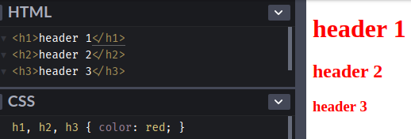</p><p>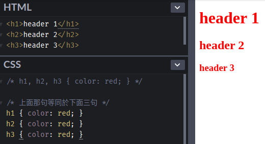</p><iframe height="244" style="width:100%" scrolling="no" title="Groups of selector" src="https://codepen.io/titangene/embed/ExYevee/?height=244&theme-id=dark&default-tab=css,result" frameborder="no" allowtransparency="true" allowfullscreen>See the Pen <a href="https://codepen.io/titangene/pen/ExYevee/" target="_blank" rel="noopener">Groups of selector</a> by Titangene (<a href="https://codepen.io/titangene" target="_blank" rel="noopener">@titangene</a>) on <a href="https://codepen.io" target="_blank" rel="noopener">CodePen</a>.</iframe><p>不要要注意的是，上面兩個範例會有一樣的結果是因為所有選擇器都是有效的選擇器 (valid selector)。如果其中一個選擇器為無效時，就會讓整個選擇器群組都無效。不過，若將三個選擇器分開宣告時，就只有那一個會失效。例如：</p><figure class="highlight html"><table><tr><td class="gutter"><pre><span class="line">1</span><br><span class="line">2</span><br><span class="line">3</span><br></pre></td><td class="code"><pre><code class="hljs html"><span class="hljs-tag">&lt;<span class="hljs-name">h1</span>&gt;</span>header 1<span class="hljs-tag">&lt;/<span class="hljs-name">h1</span>&gt;</span><br><span class="hljs-tag">&lt;<span class="hljs-name">h2</span>&gt;</span>header 2<span class="hljs-tag">&lt;/<span class="hljs-name">h2</span>&gt;</span><br><span class="hljs-tag">&lt;<span class="hljs-name">h3</span>&gt;</span>header 3<span class="hljs-tag">&lt;/<span class="hljs-name">h3</span>&gt;</span><br></code></pre></td></tr></table></figure><figure class="highlight css"><table><tr><td class="gutter"><pre><span class="line">1</span><br><span class="line">2</span><br><span class="line">3</span><br></pre></td><td class="code"><pre><code class="hljs css"><span class="hljs-selector-tag">h1</span> &#123; <span class="hljs-attribute">color</span>: red; &#125;<br><span class="hljs-selector-tag">h2</span>.<span class="hljs-selector-class">.foo</span> &#123; <span class="hljs-attribute">color</span>: red; &#125;<br><span class="hljs-selector-tag">h3</span> &#123; <span class="hljs-attribute">color</span>: red; &#125;<br></code></pre></td></tr></table></figure><p>不等於：</p><figure class="highlight css"><table><tr><td class="gutter"><pre><span class="line">1</span><br></pre></td><td class="code"><pre><code class="hljs css"><span class="hljs-selector-tag">h1</span>, <span class="hljs-selector-tag">h2</span>.<span class="hljs-selector-class">.foo</span>, <span class="hljs-selector-tag">h3</span> &#123; <span class="hljs-attribute">color</span>: red; &#125;<br></code></pre></td></tr></table></figure><p>Demo：<a href="https://codepen.io/titangene/pen/gOYdxQP" target="_blank" rel="noopener">Codepen 連結</a></p><p>如下圖，因為上面其中的 <code>h2..foo</code> 是無效選擇器 (invalid selector)，所以會造成 <code>h1, h2..foo, h3</code> 完全無效，並且會刪除這個樣式規則：</p><p>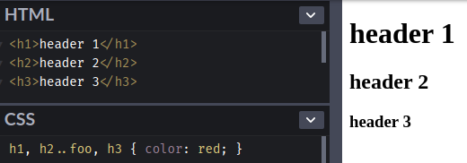</p><p>如果是分開宣告，就只會刪除 <code>h2..foo</code> 這個樣式規則，如下圖：</p><p>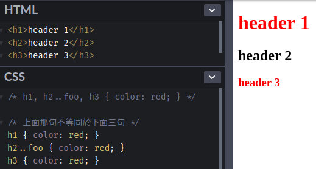</p><iframe height="268" style="width:100%" scrolling="no" title="Groups of selector: valid selector" src="https://codepen.io/titangene/embed/gOYdxQP/?height=268&theme-id=dark&default-tab=css,result" frameborder="no" allowtransparency="true" allowfullscreen>See the Pen <a href="https://codepen.io/titangene/pen/gOYdxQP/" target="_blank" rel="noopener">Groups of selector: valid selector</a> by Titangene (<a href="https://codepen.io/titangene" target="_blank" rel="noopener">@titangene</a>) on <a href="https://codepen.io" target="_blank" rel="noopener">CodePen</a>.</iframe><h2 id="simple-selector"><a class="header-anchor" href="#simple-selector"></a>Simple selector</h2><p>以下這些都是 simple selector：</p><ul><li>type selector</li><li>universal selector</li><li>attribute selector</li><li>class selector</li><li>ID selector</li><li>pseudo-class</li></ul><h3 id="type-selector"><a class="header-anchor" href="#type-selector"></a>Type selector</h3><p>選到 HTML tag 名稱的元素，例如：match 所有 h1 元素：</p><figure class="highlight html"><table><tr><td class="gutter"><pre><span class="line">1</span><br></pre></td><td class="code"><pre><code class="hljs html"><span class="hljs-tag">&lt;<span class="hljs-name">h1</span>&gt;</span>header 1<span class="hljs-tag">&lt;/<span class="hljs-name">h1</span>&gt;</span><br></code></pre></td></tr></table></figure><figure class="highlight css"><table><tr><td class="gutter"><pre><span class="line">1</span><br></pre></td><td class="code"><pre><code class="hljs css"><span class="hljs-selector-tag">h1</span> &#123; <span class="hljs-attribute">color</span>: red; &#125;<br></code></pre></td></tr></table></figure><p>Demo：<a href="https://codepen.io/titangene/pen/JjPaMpm" target="_blank" rel="noopener">Codepen 連結</a></p><p>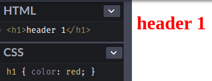</p><iframe height="265" style="width:100%" scrolling="no" title="type selector" src="https://codepen.io/titangene/embed/JjPaMpm/?height=265&theme-id=dark&default-tab=css,result" frameborder="no" allowtransparency="true" allowfullscreen>See the Pen <a href="https://codepen.io/titangene/pen/JjPaMpm/" target="_blank" rel="noopener">type selector</a> by Titangene (<a href="https://codepen.io/titangene" target="_blank" rel="noopener">@titangene</a>) on <a href="https://codepen.io" target="_blank" rel="noopener">CodePen</a>.</iframe><h3 id="universal-selector"><a class="header-anchor" href="#universal-selector"></a>Universal Selector</h3><p>Universal selector 是使用 <code>*</code> 來 match 任何元素。</p><p>例如：下面範例可以選到所有元素：</p><figure class="highlight html"><table><tr><td class="gutter"><pre><span class="line">1</span><br><span class="line">2</span><br><span class="line">3</span><br><span class="line">4</span><br></pre></td><td class="code"><pre><code class="hljs html"><span class="hljs-tag">&lt;<span class="hljs-name">h1</span>&gt;</span>header 1<span class="hljs-tag">&lt;/<span class="hljs-name">h1</span>&gt;</span><br><span class="hljs-tag">&lt;<span class="hljs-name">h2</span>&gt;</span>header 2<span class="hljs-tag">&lt;/<span class="hljs-name">h2</span>&gt;</span><br><span class="hljs-tag">&lt;<span class="hljs-name">h3</span>&gt;</span>header 3<span class="hljs-tag">&lt;/<span class="hljs-name">h3</span>&gt;</span><br><span class="hljs-tag">&lt;<span class="hljs-name">a</span> <span class="hljs-attr">href</span>=<span class="hljs-string">"https://titangene.github.io/"</span>&gt;</span>Titangene Blog<span class="hljs-tag">&lt;/<span class="hljs-name">a</span>&gt;</span><br></code></pre></td></tr></table></figure><figure class="highlight css"><table><tr><td class="gutter"><pre><span class="line">1</span><br></pre></td><td class="code"><pre><code class="hljs css">* &#123; <span class="hljs-attribute">color</span>: red; &#125;<br></code></pre></td></tr></table></figure><p>Demo：<a href="https://codepen.io/titangene/pen/NWKLvQg" target="_blank" rel="noopener">Codepen 連結</a></p><p>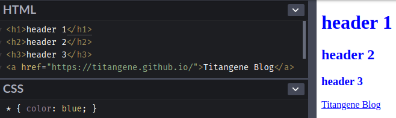</p><iframe height="285" style="width:100%" scrolling="no" title="Universal Selector" src="https://codepen.io/titangene/embed/NWKLvQg/?height=285&theme-id=dark&default-tab=html,result" frameborder="no" allowtransparency="true" allowfullscreen>See the Pen <a href="https://codepen.io/titangene/pen/NWKLvQg/" target="_blank" rel="noopener">Universal Selector</a> by Titangene (<a href="https://codepen.io/titangene" target="_blank" rel="noopener">@titangene</a>) on <a href="https://codepen.io" target="_blank" rel="noopener">CodePen</a>.</iframe><h3 id="class-selector"><a class="header-anchor" href="#class-selector"></a>Class selector</h3><p>如果要對多個元素需要相同的樣式時，就可以用 <code>class</code> 這個屬性來標識它們。在 CSS 是使用 <code>.</code> 來代表 class 屬性，也等同於 <code>~=</code> 表示法 (notation)，屬性值必須在 <code>.</code> 之後。例如：</p><figure class="highlight html"><table><tr><td class="gutter"><pre><span class="line">1</span><br><span class="line">2</span><br></pre></td><td class="code"><pre><code class="hljs html"><span class="hljs-tag">&lt;<span class="hljs-name">h1</span>&gt;</span>header 1<span class="hljs-tag">&lt;/<span class="hljs-name">h1</span>&gt;</span><br><span class="hljs-tag">&lt;<span class="hljs-name">h1</span> <span class="hljs-attr">class</span>=<span class="hljs-string">"highlight"</span>&gt;</span>highlight header 1<span class="hljs-tag">&lt;/<span class="hljs-name">h1</span>&gt;</span><br></code></pre></td></tr></table></figure><figure class="highlight css"><table><tr><td class="gutter"><pre><span class="line">1</span><br></pre></td><td class="code"><pre><code class="hljs css"><span class="hljs-selector-tag">h1</span><span class="hljs-selector-class">.highlight</span> &#123; <span class="hljs-attribute">color</span>: red; &#125;<br></code></pre></td></tr></table></figure><p>等同於：</p><figure class="highlight css"><table><tr><td class="gutter"><pre><span class="line">1</span><br></pre></td><td class="code"><pre><code class="hljs css"><span class="hljs-selector-tag">h1</span><span class="hljs-selector-attr">[class~=highlight]</span> &#123; <span class="hljs-attribute">color</span>: red; &#125;<br></code></pre></td></tr></table></figure><p>Demo：<a href="https://codepen.io/titangene/pen/gOYdXOe" target="_blank" rel="noopener">Codepen 連結</a></p><p>第一個 <code>h1</code> 元素的字體顏色不會變成紅色，只有第二個 <code>h1</code> 元素才會變紅色：</p><p>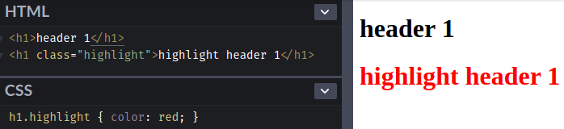</p><p>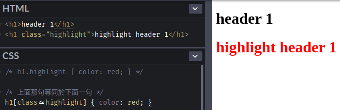</p><iframe height="240" style="width:100%" scrolling="no" title="class selector" src="https://codepen.io/titangene/embed/gOYdXOe/?height=240&theme-id=dark&default-tab=css,result" frameborder="no" allowtransparency="true" allowfullscreen>See the Pen <a href="https://codepen.io/titangene/pen/gOYdXOe/" target="_blank" rel="noopener">class selector</a> by Titangene (<a href="https://codepen.io/titangene" target="_blank" rel="noopener">@titangene</a>) on <a href="https://codepen.io" target="_blank" rel="noopener">CodePen</a>.</iframe><p>如果只單獨使用 class selector (也就是 <code>.</code> )，也等同於在前面加上 universal selector (也就是 <code>*</code> )。例如：</p><figure class="highlight html"><table><tr><td class="gutter"><pre><span class="line">1</span><br><span class="line">2</span><br><span class="line">3</span><br><span class="line">4</span><br></pre></td><td class="code"><pre><code class="hljs html"><span class="hljs-tag">&lt;<span class="hljs-name">h1</span>&gt;</span>header 1<span class="hljs-tag">&lt;/<span class="hljs-name">h1</span>&gt;</span><br><span class="hljs-tag">&lt;<span class="hljs-name">h1</span> <span class="hljs-attr">class</span>=<span class="hljs-string">"highlight"</span>&gt;</span>highlight header 1<span class="hljs-tag">&lt;/<span class="hljs-name">h1</span>&gt;</span><br><span class="hljs-tag">&lt;<span class="hljs-name">h2</span>&gt;</span>header 2<span class="hljs-tag">&lt;/<span class="hljs-name">h2</span>&gt;</span><br><span class="hljs-tag">&lt;<span class="hljs-name">h2</span> <span class="hljs-attr">class</span>=<span class="hljs-string">"highlight"</span>&gt;</span>highlight header 2<span class="hljs-tag">&lt;/<span class="hljs-name">h2</span>&gt;</span><br></code></pre></td></tr></table></figure><figure class="highlight css"><table><tr><td class="gutter"><pre><span class="line">1</span><br></pre></td><td class="code"><pre><code class="hljs css">*<span class="hljs-selector-class">.highlight</span> &#123; <span class="hljs-attribute">color</span>: red; &#125;<br></code></pre></td></tr></table></figure><figure class="highlight css"><table><tr><td class="gutter"><pre><span class="line">1</span><br></pre></td><td class="code"><pre><code class="hljs css"><span class="hljs-selector-class">.highlight</span> &#123; <span class="hljs-attribute">color</span>: red; &#125;<br></code></pre></td></tr></table></figure><p>Demo：<a href="https://codepen.io/titangene/pen/GRKXOZx" target="_blank" rel="noopener">Codepen 連結</a></p><p>第一個 <code>h1</code> 和 <code>h2</code> 元素的字體顏色不會變成紅色，只有第二個 <code>h1</code> 和 <code>h2</code> 元素才會變紅色：</p><p>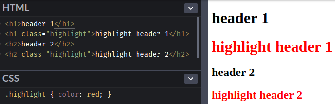</p><p>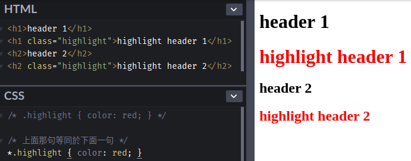</p><iframe height="320" style="width:100%" scrolling="no" title="class selector &amp; universal selector" src="https://codepen.io/titangene/embed/GRKXOZx/?height=320&theme-id=dark&default-tab=html,result" frameborder="no" allowtransparency="true" allowfullscreen>See the Pen <a href="https://codepen.io/titangene/pen/GRKXOZx/" target="_blank" rel="noopener">class selector &amp; universal selector</a> by Titangene (<a href="https://codepen.io/titangene" target="_blank" rel="noopener">@titangene</a>) on <a href="https://codepen.io" target="_blank" rel="noopener">CodePen</a>.</iframe><p>如果需要同時指定某元素上的兩個 class，可以寫成這樣：</p><figure class="highlight html"><table><tr><td class="gutter"><pre><span class="line">1</span><br><span class="line">2</span><br><span class="line">3</span><br><span class="line">4</span><br></pre></td><td class="code"><pre><code class="hljs html"><span class="hljs-tag">&lt;<span class="hljs-name">h1</span>&gt;</span>header 1<span class="hljs-tag">&lt;/<span class="hljs-name">h1</span>&gt;</span><br><span class="hljs-tag">&lt;<span class="hljs-name">h1</span> <span class="hljs-attr">class</span>=<span class="hljs-string">"text-primary highlight"</span>&gt;</span>highlight header 1<span class="hljs-tag">&lt;/<span class="hljs-name">h1</span>&gt;</span><br><span class="hljs-tag">&lt;<span class="hljs-name">h2</span>&gt;</span>header 2<span class="hljs-tag">&lt;/<span class="hljs-name">h2</span>&gt;</span><br><span class="hljs-tag">&lt;<span class="hljs-name">h2</span> <span class="hljs-attr">class</span>=<span class="hljs-string">"highlight"</span>&gt;</span>highlight header 2<span class="hljs-tag">&lt;/<span class="hljs-name">h2</span>&gt;</span><br></code></pre></td></tr></table></figure><figure class="highlight css"><table><tr><td class="gutter"><pre><span class="line">1</span><br></pre></td><td class="code"><pre><code class="hljs css"><span class="hljs-selector-class">.text-primary</span><span class="hljs-selector-class">.highlight</span> &#123; <span class="hljs-attribute">color</span>: red; &#125;<br></code></pre></td></tr></table></figure><div class="info"><p>註：在 HTML 要對某元素上同時設定多個 class，是使用空白字元來分隔多個 class。以上面範例來說，第二個 <code>h1</code> 上有兩個 class，分別是 <code>text-primary</code> 和 <code>highlight</code>。</p></div><p>Demo：<a href="https://codepen.io/titangene/pen/WNegdxr" target="_blank" rel="noopener">Codepen 連結</a></p><p>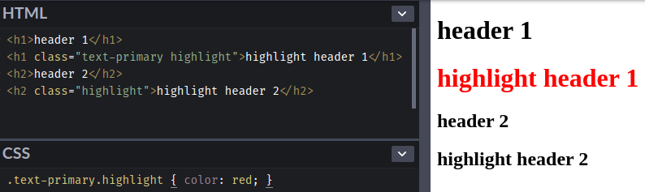</p><iframe height="320" style="width:100%" scrolling="no" title="multi class selector" src="https://codepen.io/titangene/embed/WNegdxr/?height=320&theme-id=dark&default-tab=html,result" frameborder="no" allowtransparency="true" allowfullscreen>See the Pen <a href="https://codepen.io/titangene/pen/WNegdxr/" target="_blank" rel="noopener">multi class selector</a> by Titangene (<a href="https://codepen.io/titangene" target="_blank" rel="noopener">@titangene</a>) on <a href="https://codepen.io" target="_blank" rel="noopener">CodePen</a>.</iframe><h3 id="id-selector"><a class="header-anchor" href="#id-selector"></a>ID selector</h3><p>如果要對某個元素作唯一的標示，就可以用 <code>id</code> 這個屬性來標識它們。在 CSS 是使用 <code>#</code> 來代表 id 屬性，屬性值必須在 <code>#</code> 之後。例如：</p><figure class="highlight html"><table><tr><td class="gutter"><pre><span class="line">1</span><br><span class="line">2</span><br><span class="line">3</span><br><span class="line">4</span><br></pre></td><td class="code"><pre><code class="hljs html"><span class="hljs-tag">&lt;<span class="hljs-name">h1</span>&gt;</span>header 1<span class="hljs-tag">&lt;/<span class="hljs-name">h1</span>&gt;</span><br><span class="hljs-tag">&lt;<span class="hljs-name">h1</span> <span class="hljs-attr">id</span>=<span class="hljs-string">"titan"</span>&gt;</span>header 1<span class="hljs-tag">&lt;/<span class="hljs-name">h1</span>&gt;</span><br><span class="hljs-tag">&lt;<span class="hljs-name">h2</span>&gt;</span>header 2<span class="hljs-tag">&lt;/<span class="hljs-name">h2</span>&gt;</span><br><span class="hljs-tag">&lt;<span class="hljs-name">h2</span> <span class="hljs-attr">id</span>=<span class="hljs-string">"titan"</span>&gt;</span>header 2<span class="hljs-tag">&lt;/<span class="hljs-name">h2</span>&gt;</span><br></code></pre></td></tr></table></figure><figure class="highlight css"><table><tr><td class="gutter"><pre><span class="line">1</span><br></pre></td><td class="code"><pre><code class="hljs css"><span class="hljs-selector-id">#titan</span> &#123; <span class="hljs-attribute">color</span>: red; &#125;<br></code></pre></td></tr></table></figure><p>Demo：<a href="https://codepen.io/titangene/pen/GRKXyjb" target="_blank" rel="noopener">Codepen 連結</a></p><p>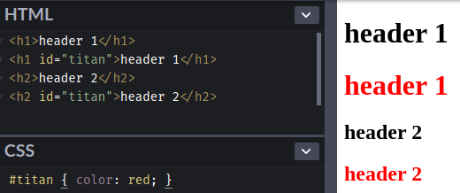</p><iframe height="320" style="width:100%" scrolling="no" title="id selector" src="//codepen.io/titangene/embed/GRKXyjb/?height=320&theme-id=dark&default-tab=html,result" frameborder="no" allowtransparency="true" allowfullscreen>See the Pen <a href="https://codepen.io/titangene/pen/GRKXyjb/" target="_blank" rel="noopener">id selector</a> by Titangene (<a href="https://codepen.io/titangene" target="_blank" rel="noopener">@titangene</a>) on <a href="https://codepen.io" target="_blank" rel="noopener">CodePen</a>.</iframe><p>如果只想選擇帶有 <code>titan</code> 這個 id 的 <code>h2</code> 元素，可以寫成這樣：</p><figure class="highlight css"><table><tr><td class="gutter"><pre><span class="line">1</span><br></pre></td><td class="code"><pre><code class="hljs css"><span class="hljs-selector-tag">h2</span><span class="hljs-selector-id">#titan</span> &#123; <span class="hljs-attribute">color</span>: red; &#125;<br></code></pre></td></tr></table></figure><p>Demo：<a href="https://codepen.io/titangene/pen/KKPxZma" target="_blank" rel="noopener">Codepen 連結</a></p><p>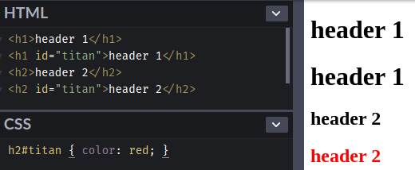</p><iframe height="320" style="width:100%" scrolling="no" title="id selector: specific element" src="//codepen.io/titangene/embed/KKPxZma/?height=320&theme-id=dark&default-tab=html,result" frameborder="no" allowtransparency="true" allowfullscreen>See the Pen <a href="https://codepen.io/titangene/pen/KKPxZma/" target="_blank" rel="noopener">id selector: specific element</a> by Titangene (<a href="https://codepen.io/titangene" target="_blank" rel="noopener">@titangene</a>) on <a href="https://codepen.io" target="_blank" rel="noopener">CodePen</a>.</iframe><h2 id="最後"><a class="header-anchor" href="#最後"></a>最後</h2><p>今天介紹一些 simple selector，接下來幾天會接續介紹其他 selector。</p><p>資料來源：</p><ul><li><a href="https://www.w3.org/TR/CSS22/selector.html" target="_blank" rel="noopener">CSS 2.2 Specification - Selectors</a></li><li><a href="https://www.w3.org/TR/selectors-3/" target="_blank" rel="noopener">Selectors Level 3</a></li><li><a href="https://www.w3.org/TR/selectors-4/" target="_blank" rel="noopener">Selectors Level 4</a></li></ul></div><div class="article-tags tags"><a href="/tags/it-鐵人賽/" title="IT 鐵人賽">IT 鐵人賽</a></div></section><div class="article-share-links"><span>分享：</span> <a class="fab fa-facebook-f" title="Facebook" target="_blank" href="javascript:window.open('https://www.facebook.com/sharer.php?u=https%3A%2F%2Ftitangene.github.io%2Farticle%2Fcss-selector-1.html', 'Share on Facebook','width=600, height=600')"></a> <a class="fab fa-twitter" title="Twitter" target="_blank" href="javascript:window.open('https://twitter.com/share?url=https%3A%2F%2Ftitangene.github.io%2Farticle%2Fcss-selector-1.html&amp;text=重新認識 CSS - CSS Selector (1)&amp;hashtags=IT鐵人賽&amp;via=titangene_blog', 'Share on Twitter','width=600, height=260')"></a> <a class="fab fa-linkedin-in" title="Linkedin" target="_blank" href="javascript:window.open('https://www.linkedin.com/shareArticle?mini=true&amp;url=https%3A%2F%2Ftitangene.github.io%2Farticle%2Fcss-selector-1.html&amp;title=重新認識 CSS - CSS Selector (1)', 'Share on Linkedin','width=600, height=600')"></a> <a class="fab fa-facebook-messenger" title="Facebook Messenger" target="_blank" href="javascript:window.open('http://www.facebook.com/dialog/send?app_id=2470546159839111&amp;link=https%3A%2F%2Ftitangene.github.io%2Farticle%2Fcss-selector-1.html&amp;display=popup&amp;redirect_uri=https%3A%2F%2Fwww.facebook.com%2Fdialog%2Freturn%2Fclose%23_%3D_', 'Send in Messenger','width=600, height=600')"></a> <a class="fab fa-telegram-plane" href="https://telegram.me/share/url?url=https%3A%2F%2Ftitangene.github.io%2Farticle%2Fcss-selector-1.html&text=重新認識 CSS - CSS Selector (1)" target="_blank"></a></div><nav id="article-nav"><a href="/article/css-selector-2.html" id="article-nav-prev" class="article-nav-link-wrap" title="重新認識 CSS - CSS Selector (2)" rel="prev"><strong class="article-nav-caption">Prev</strong><p class="article-nav-title">重新認識 CSS - CSS Selector (2)</p><i class="fas fa-angle-left"></i> </a><a href="/article/css-introduction.html" id="article-nav-next" class="article-nav-link-wrap" title="重新認識 CSS - CSS 簡介" rel="next"><strong class="article-nav-caption">Next</strong><p class="article-nav-title">重新認識 CSS - CSS 簡介</p><i class="fas fa-angle-right"></i></a></nav><section id="list_related_posts"><h2>相關文章</h2><ul class="related-posts"><li class="related-posts-item"><a class="related-posts-link" href="/article/css-selector-2.html">重新認識 CSS - CSS Selector (2)</a><div class="related-posts-item-abstract">Selector (選擇器) 可用來選擇 HTML 和 XML 文件中的節點，並將樣式屬性綁定到文件 (HTML 和 XML) 中的元素上。當選擇器與某元素 match 的時候，就可以對選到的元素進行 CSS 樣式設定。</div></li><li class="related-posts-item"><a class="related-posts-link" href="/article/css-selector-3.html">重新認識 CSS - CSS Selector (3)</a><div class="related-posts-item-abstract">Selector (選擇器) 可用來選擇 HTML 和 XML 文件中的節點，並將樣式屬性綁定到文件 (HTML 和 XML) 中的元素上。當選擇器與某元素 match 的時候，就可以對選到的元素進行 CSS 樣式設定。</div></li><li class="related-posts-item"><a class="related-posts-link" href="/article/css-introduction.html">重新認識 CSS - CSS 簡介</a><div class="related-posts-item-abstract">CSS 是 Cascading Style Sheets 的縮寫，是一種 style sheet (樣式表) 語言，可將自訂的樣式 (例如：字體、顏色) 附加在 HTML 文件上。這篇會先簡介 CSS，以及如何在 HTM</div></li><li class="related-posts-item"><a class="related-posts-link" href="/article/css-selector-4.html">重新認識 CSS - CSS Selector (4)</a><div class="related-posts-item-abstract">Selector (選擇器) 可用來選擇 HTML 和 XML 文件中的節點，並將樣式屬性綁定到文件 (HTML 和 XML) 中的元素上。當選擇器與某元素 match 的時候，就可以對選到的元素進行 CSS 樣式設定。</div></li></ul></section><section class="comments" id="comments"><h2>討論區</h2><div id="disqus_thread"><noscript>Please enable JavaScript to view the <a href="https://disqus.com/?ref_noscript">comments powered by Disqus.</a></noscript></div></section></article><script>window.subData={title:"重新認識 CSS - CSS Selector (1)",tools:!0}</script></div><aside class="l_side"><section class="m_widget about"><div class="avatar-section"><style>.avatar-cover{background:url(/images/avatar_cover.jpg) 0 10%/cover no-repeat}</style><div class="avatar-cover"></div></div><div class="header">Titangene</div><div class="content"><div class="desc">利用 blog 紀錄學習歷程</div></div><div class="content"><meta itemprop="url" content="https://titangene.github.io"><div class="social-wrapper"><a itemprop="sameAs" href="https://github.com/titangene" class="social github" target="_blank" rel="external"><span class="fab fa-github-alt"></span> </a><a itemprop="sameAs" href="https://www.facebook.com/titangene.tw" class="social facebook" target="_blank" rel="external"><span class="fab fa-facebook-square"></span> </a><a itemprop="sameAs" href="https://www.instagram.com/titangene/" class="social instagram" target="_blank" rel="external"><span class="fab fa-instagram"></span> </a><a itemprop="sameAs" href="https://www.flickr.com/photos/titangene" class="social flickr" target="_blank" rel="external"><span class="fab fa-flickr"></span> </a><a itemprop="sameAs" href="/atom.xml" class="social rss" target="_blank" rel="external"><span class="fas fa-rss"></span></a></div></div></section><section class="m_widget facebook_page"><div class="fb-page" data-href="https://www.facebook.com/titangene.blog/" data-width="250" data-small-header="false" data-adapt-container-width="false" data-hide-cover="false" data-show-facepile="true"><blockquote cite="https://www.facebook.com/titangene.blog/" class="fb-xfbml-parse-ignore"><p><a href="https://www.facebook.com/titangene.blog/" class="social facebook" target="_blank"><span class="fab fa-facebook-square"></span></a></p><p><a href="https://www.facebook.com/titangene.blog/">Titangene Blog</a></p><p>Loading...</p></blockquote></div></section><section class="m_widget recent"><div class="header">Recents</div><div class="content"><ul class="entry"><li><a itemprop="url" class="flat-box" href="/article/css-selector-4.html"><time>2019-09-20</time><div class="name">重新認識 CSS - CSS Selector (4)</div></a></li><li><a itemprop="url" class="flat-box" href="/article/css-selector-3.html"><time>2019-09-19</time><div class="name">重新認識 CSS - CSS Selector (3)</div></a></li><li><a itemprop="url" class="flat-box" href="/article/css-selector-2.html"><time>2019-09-18</time><div class="name">重新認識 CSS - CSS Selector (2)</div></a></li><li><a itemprop="url" class="flat-box" href="/article/css-selector-1.html"><time>2019-09-17</time><div class="name">重新認識 CSS - CSS Selector (1)</div></a></li><li><a itemprop="url" class="flat-box" href="/article/css-introduction.html"><time>2019-09-16</time><div class="name">重新認識 CSS - CSS 簡介</div></a></li></ul></div></section></aside><script>setLoadingBarProgress(60)</script></div></div><footer id="footer" class="clearfix"><div class="social-wrapper"><a href="https://github.com/titangene" class="social github" target="_blank" rel="external"><span class="fab fa-github-alt"></span> </a><a href="https://www.facebook.com/titangene.tw" class="social facebook" target="_blank" rel="external"><span class="fab fa-facebook-square"></span> </a><a href="https://www.instagram.com/titangene/" class="social instagram" target="_blank" rel="external"><span class="fab fa-instagram"></span> </a><a href="https://www.flickr.com/photos/titangene" class="social flickr" target="_blank" rel="external"><span class="fab fa-flickr"></span> </a><a href="/atom.xml" class="social rss" target="_blank" rel="external"><span class="fas fa-rss"></span></a></div><div>© 2018 - 2019 <span itemprop="copyrightHolder">Titangene</span></div><div>Powered by <a href="https://hexo.io/" class="codename" rel="external">Hexo</a> - Theme <a href="https://github.com/stkevintan/hexo-theme-material-flow" class="codename" rel="external">MaterialFlow</a></div><div><a rel="license" href="http://creativecommons.org/licenses/by-nc-sa/4.0/"></a></div></footer><script>setLoadingBarProgress(80)</script><script src="//cdnjs.cloudflare.com/ajax/libs/jquery/2.1.4/jquery.min.js"></script><script src="https://cdnjs.cloudflare.com/ajax/libs/moment.js/2.24.0/moment-with-locales.min.js"></script><script>moment.locale("zh-tw")</script><script src="https://cdnjs.cloudflare.com/ajax/libs/clipboard.js/2.0.0/clipboard.min.js"></script><script src="/js/jquery.fitvids.js"></script><script>var SEARCH_SERVICE="hexo",ROOT="/";ROOT.endsWith("/")||(ROOT+="/")</script><script src="/js/search.js"></script><script src="/js/app.js"></script><script src="/js/clipboard-use.js"></script><script>var disqus_shortname="titangene-blog",disqus_config=function(){this.page.url="https://titangene.github.io/article/css-selector-1.html",this.page.identifier="article/css-selector-1.html",this.page.title="重新認識 CSS - CSS Selector (1)"};!function(){var t=document.createElement("script");t.async=!0,t.src="//"+disqus_shortname+".disqus.com/embed.js",t.setAttribute("data-timestamp",""+new Date),(document.head||document.body).appendChild(t)}()</script><script id="dsq-count-scr" src="https://titangene-blog.disqus.com/count.js" async></script><div id="fb-root"></div><script>window.fbAsyncInit=function(){FB.init({appId:"2470546159839111",autoLogAppEvents:!0,xfbml:!0,version:"v2.11"}),FB.AppEvents.logPageView()},function(e,n,t){var o,s=e.getElementsByTagName(n)[0];e.getElementById(t)||((o=e.createElement(n)).id=t,o.src="//connect.facebook.net/zh_TW/sdk.js",s.parentNode.insertBefore(o,s))}(document,"script","facebook-jssdk")</script><script>setLoadingBarProgress(100)</script></body>